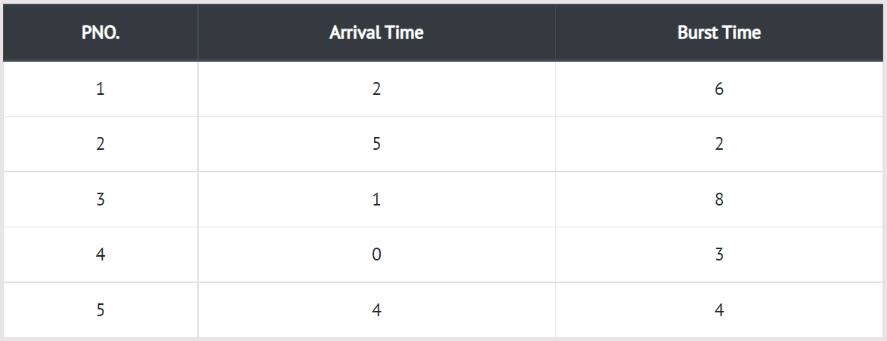

Shortest Remaining First (SRTF) is an algorithm in which the process having the smallest execution time is chosen for the next execution. In this scheduling, jobs are put into the ready queue as they come. A process with shortest burst time begins execution. If a process with even a shorter burst time arrives, the current process is removed or preempted from execution, and the shorter job is allocated CPU cycle.
In the following example, there are five jobs named as P1, P2, P3, P4 and P5. Their arrival time and burst time are given in the table below.
Step 0) At time=0, P4 arrives and starts execution.
Step 1) At time=1, Process P3 arrives. But, P4 has a shorter burst time. It will continue execution.
Step 2) At time=2, process P1 arrives with burst time = 6. The burst time is more than that of P4.
Hence, P4 will continue execution.
Step 3) At time=3, process P4 will finish its execution. The burst time of P3 and P1 is compared.
Process P1 is executed because its burst time is lower.
Step 4) At time=4, process P5 will arrive. The burst time of P3, P5, and P1 is compared. Process P5
is executed because its burst time is lowest. Process P1 is preempted.
Step 5) At time=5, process P2 will arrive. The burst time of P1, P2, P3, and P5 is compared. Process
P2 is executed because its burst time is least. Process P5 is preempted.
Step 6) At time=6, P2 is executing.
Step 7) At time=7, P2 finishes its execution. The burst time of P1, P3, and P5 is compared. Process
P5 is executed because its burst time is lesser.
Step 8) At time =10, P5 will finish its execution. The burst time of P1 and P3 is compared. Process
P1 is executed because its burst time is less.
Step 9) At time =15, P1 finishes its execution. P3 is the only process left. It will start execution.
Step 10) At time =23, P3 finishes its execution.
Step 11) Let's calculate the average waiting time for above example.
The Turnaround time and the waiting time are calculated by using the following formula.
Turn Around Time = Completion Time - Arrival Time Waiting Time = Turnaround time - Burst Time